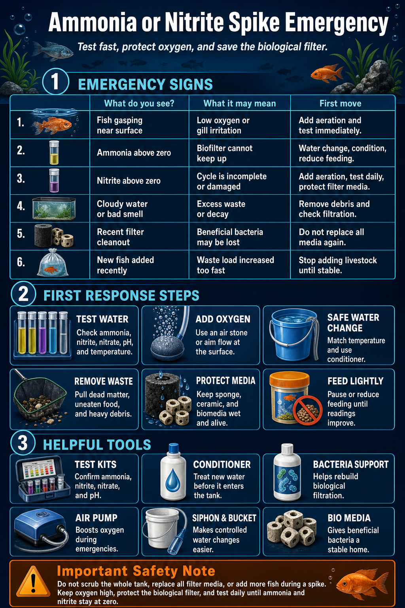

1
Confirm
Retest ammonia and nitrite.
Use a reliable test kit and check pH and temperature too. Toxicity and fish stress change with water conditions.
 The Hidden ReefAquariums · Fish · Coral · Ponds
The Hidden ReefAquariums · Fish · Coral · Ponds
Ammonia and nitrite are urgent because they damage gills, stress livestock, and can kill fish before the tank looks obviously dirty. Test first, protect oxygen, and correct the cause without destroying the biological filter.
The safest first move is oxygen plus a measured water-quality response.
Use a reliable test kit and check pH and temperature too. Toxicity and fish stress change with water conditions.
Aim flow at the surface or add an air stone. Fish exposed to ammonia or nitrite need extra oxygen support.
Use conditioner, match temperature, and avoid a full teardown. The goal is to reduce toxins while preserving bacteria.
Fish symptoms often show up before the water looks bad.
Fish gathering near the surface, overflow, or filter return may be struggling with oxygen or gill irritation.
Fish may hover, hide, refuse food, clamp fins, or sit near strong flow when toxins are present.
In an established tank, ammonia should read zero. A positive reading means waste is outpacing the biofilter.
Nitrite often rises after ammonia as a cycling tank or damaged filter tries to catch up.
A haze, smell, or film can point to excess organics, overfeeding, dead matter, or filter disruption.
Fast losses after a new setup, cleaning, move, or power outage should be treated as water-quality urgent.
Use this when ammonia or nitrite tests above safe levels.
Most spikes trace back to excess waste, disrupted bacteria, or a tank that is still cycling.
New aquariums need time for bacteria to process ammonia into nitrite and then nitrate.
Replacing all media, rinsing in untreated tap water, or letting media dry can remove beneficial bacteria.
Uneaten food breaks down into ammonia and can overwhelm the filter quickly.
Hidden losses, rotting plants, or trapped debris can create a sudden waste pulse.
Adding many fish at once can create more waste than the existing bacteria can process.
Power outages, clogged filters, or stalled flow can starve bacteria and reduce waste processing.
Focus on testing, dilution, bacteria support, and filter protection.
Test kits confirm the problem and show whether the tank is cycling or recovering.
Shop maintenanceUse conditioner for water changes and choose ammonia/nitrite support products carefully.
Shop maintenanceExtra surface movement helps stressed fish breathe and supports bacteria during recovery.
View filtrationBiological support can help the filter recover after cleaning, cycling, or livestock additions.
View filtrationControlled water changes dilute toxins without shocking livestock.
Shop maintenanceStable biological media gives bacteria a place to live and helps prevent repeat spikes.
View filtrationDo not replace all filter media, scrub everything sterile, add more fish, overfeed, or chase the number with repeated huge water changes. Keep oxygen high, protect the biofilter, and test daily until ammonia and nitrite stay at zero.
Compare with the cloudy water guide